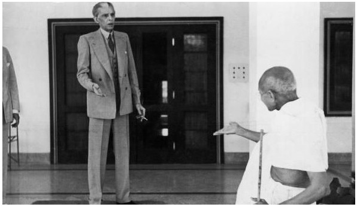

Quaid-e-Azam Muhammad Ali Jinnah
The man who did what was thought to be impossible

Quaid-e-Azam Muhammad Ali Jinnah standing in suit and talking with Mohandas Karamchand Gandhi
- 1876: Born on 25th December in Gujarat into a Kasana family of Ismaili Shia Islam.
- 1891: At the age of fifteen, Jinnah went to London and worked for few years for a company.
- 1894: Jinnah quit his job to study law.
- 1896: He joined the course at Lincoln's Inn and graduated.
- 1906: Jinnah had already joined the Indian National Congress.
- 1910: On 25 January 1910, Jinnah became a member on the sixty-member Imperial Legislative Council.
- 1913: Jinnah became a member of the Muslim League.
- 1916: he became the president of the Muslim League.
- 1918: Jinnah married again. His second wife was Rattanbai Petit. She was twenty-four years younger than him.
- 1919: His wife bore a daughter who was named Dina.
- 1918: Mohandas Gandhi had become one of the main leaders of the Congress Party.
- 1920: Jinnah left the Congress party and became the president of the Muslim League.
- 1927: His focus upon politics had led to tensions in Jinnah's marriage.The couple separated and after a serious illness Rattanbai died.
- 1930: Some Muslim leaders like Allama Iqbal had argued for a separate country for the Muslim people of India.
- 1934: He left London and returned to India to reorganize the Muslim league again.
- 1937: On October 1937, Sir Sikandar Hayat Khan, who was helping the League, agreed with Jinnah's Muslim League joining his strong government. This was called the Jinnah-Sikandar Pact.
- 1940: Jinnah and the Muslim League started work to get such a separate country. They made a plan for this in 1940 called the Pakistan Resolution. This new country was to be named Pakistan.
- 1941: Jinnah founded a newspaper, named the Dawn.
- 1944: Gandhi held 14 rounds of talks with Jinnah, but they could not come to any conclusion.
- 1946: On 16 May 1946, the British announced plan for a united India. One month after, on 16 June 1946, the British announced another plan to partition the British Raj into two countries, one for the Hindus and one for the Muslims.
- 1947: After several rounds of discussion, the British Raj was partitioned, on 14 August 1947, into two countries, India and Pakistan. And Quaid-e-Azam became the founder and first Governor General of Pakistan.
- 1948: Jinnah had been suffering from tuberculosis since the early 1940s. To regain his health, he spent many months at his official rest house. The rest house was located at a place named in Ziarat. Jinnah could not regain his health. He died on 11 September 1948 from tuberculosis and lung cancer.